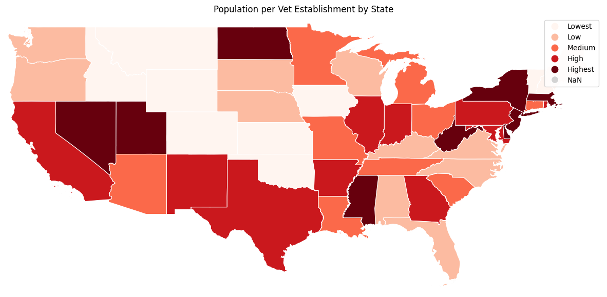
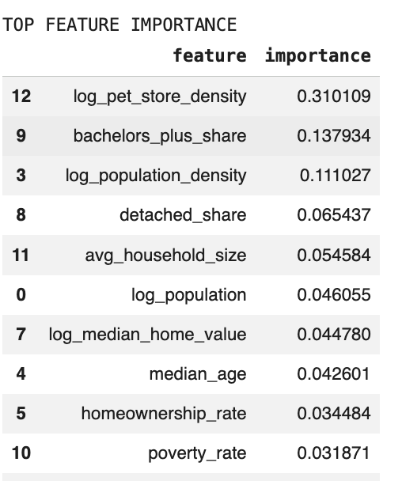
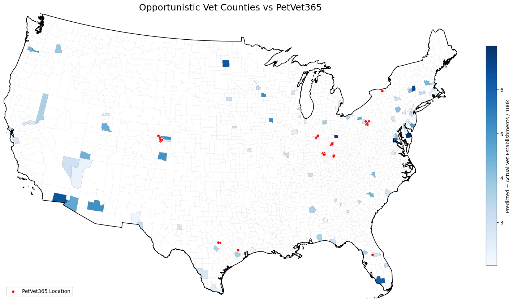
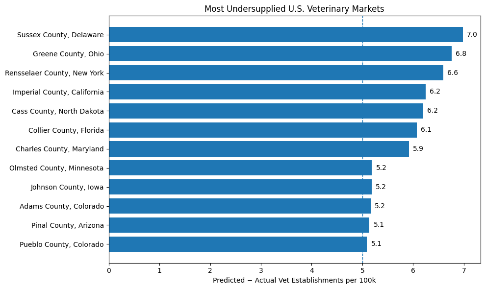

Geographic Runaway for PetVet365
PetVet365 is a portfolio company of Cimarron Healthcare Capital. For this project, I wanted to answer a pretty simple question: if PetVet365 wants to keep expanding, where does the map actually look open?
Instead of just eyeballing big states, I built a county-level screen around veterinary supply. The goal was to compare actual veterinary establishment density with what local market characteristics would suggest, then see where the biggest gaps showed up. I would treat this as a screening tool, not a final site-selection memo, but it is a good way to narrow the map before doing real diligence.
Starting with veterinary supply
At a high level, the supply picture is uneven. The state map below looks at population per vet establishment, which is a clean first way to see where access already looks tighter versus where the market appears more supplied. It does not make the expansion decision by itself, but it gives useful context before getting into county-level opportunity.

What the county screen is actually picking up
Once I moved down to the county level, the model leaned most heavily on pet store density, bachelor’s degree share, population density, detached housing share, household size, total population, median home value, median age, homeownership rate, and poverty rate. I like this chart because it makes the screen less hand-wavy. You can see which local variables are actually doing the work instead of pretending every county is just a population story.

Where the white space looks largest
This is the main output. The blue shading shows counties where predicted vet establishments per 100k exceed actual vet establishments per 100k, while the red dots mark PetVet365’s current footprint. That makes the map useful for two reasons: first, it shows where the screen thinks supply is light, and second, it shows whether those opportunities sit anywhere near where PetVet365 already operates.

What I like here is that the output is not just screaming for the same obvious major metros. Some of the strongest gaps show up in places that would be easy to miss if you only looked at raw population or broad regional growth narratives. That is exactly why I wanted the county-level view.
Counties that float to the top
The bar chart gives a cleaner read on the most undersupplied counties from the screen. Sussex County, Delaware ranks first, followed by Greene County, Ohio and Rensselaer County, New York. Imperial County, California and Cass County, North Dakota also show up near the top, along with Collier County, Florida and Charles County, Maryland.

My takeaway is not that PetVet365 should blindly drop pins into the top twelve counties and call it a strategy. It is that this screen gives a defensible first pass at where expansion conversations should start. If I were pushing the work further, the next step would be layering in more operator-specific filters like adjacency to current locations, local income mix, competitive clinic quality, and how realistic each county is from an execution standpoint. But as a first cut, this narrows the map in a way that feels much more useful than generic population-growth screening.